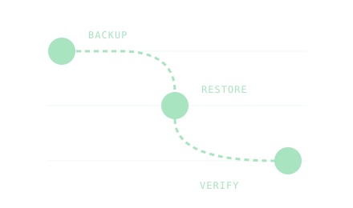

Recovery planning
Practice the way back.
Prepare a PostgreSQL restore rehearsal in a disposable container. Review the commands before running them.

Backup & environment
Review each command before running it. Use a trusted backup and a fresh container name. The app generates arguments only.
Restore playbook
Ready when you are
Load the example or enter your own input.
How to use Restore Drill Plan
- Choose a backup format, path, and supported PostgreSQL major.
- Use a fresh disposable container name.
- Generate and review the plan before executing commands yourself.